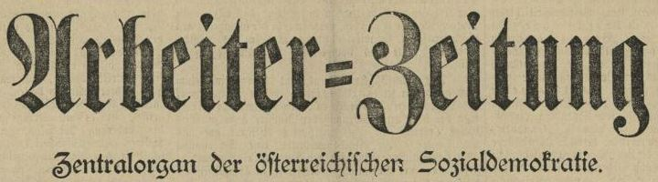
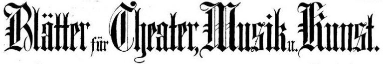
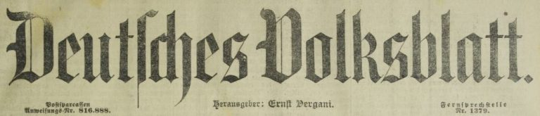
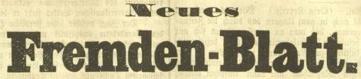
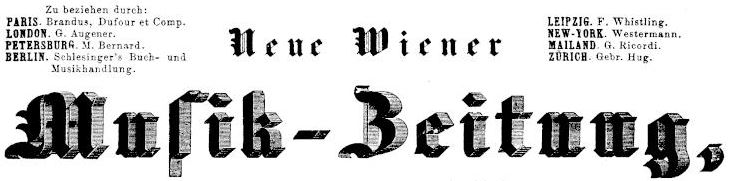
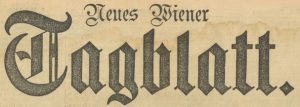
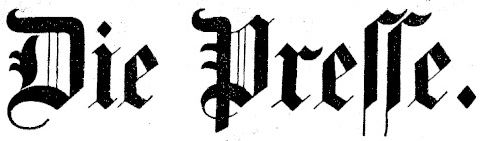
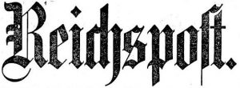
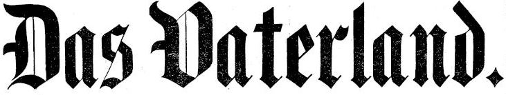
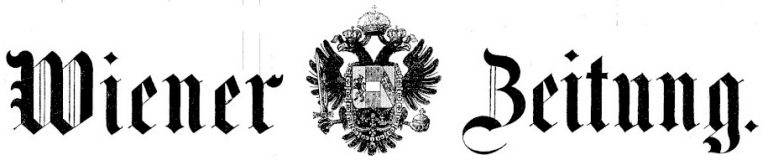

Zeitungen
Um ein möglichst umfassendes Bild der Brahms-Rezeption zu erhalten, steht bei diesem Projekt die Auswertung von Wiener Zeitungen unterschiedlicher politisch-sozialer Ausrichtungen im Fokus. Der untersuchte Zeitraum umfasst die Jahre 1862 bis 1902, in Ausnahmefällen (Blätter für Musik, Theater und Kunst, Neue Wiener Musik-Zeitung, Die Presse) wurde dieser Zeitraum ausgeweitet.
Auf Basis der öffentlich zugänglichen Daten der Österreichischen Nationalbibliothek (ANNO) konnten bis dato folgende Medien ausgewertet werden:
- Arbeiter-Zeitung (Jg. 1889–1902)
- Blätter für Musik, Theater und Kunst (Jg. 1855–1873)
- Deutsches Volksblatt (Jg. 1889–1902)
- Neues Fremden-Blatt (Jg. 1865–1876)
- Neue Wiener Musik-Zeitung (Jg. 1852–1860)
- Neues Wiener Tagblatt (Jg. 1883–1902)
- Presse (Jg. 1858–1896)
- Reichspost (Jg. 1893–1902)
- Vaterland (Jg. 1862–1902)
- Wiener Zeitung (Jg. 1853–1902)
In den Klammern sind jene Jahrgänge angeführt, die zur Zeit der Bearbeitung auf ANNO möglichst vollständig verfügbar vorlagen. Vereinzelt fehlende Ausgaben wurden intern vermerkt und sollen sukzessive ergänzt werden. Im Fall des Neuen Wiener Tagblatts war ein größerer Zeitraum betroffen, weshalb die Auswertung der kompletten Jahrgänge 1867–1882 einem späteren Zeitpunkt vorbehalten werden muss.
Arbeiter Zeitung

| Subtitel | Organ der österreichischen Sozialdemokratie |
| Laufzeit | 1889 bis 1985, 1. Ausgabe: 12. Juli 1889 |
| Gründer | Julius Popp, Ludwig August Bretschneider, Rudolf Pokorny |
| Rezensenten | Josef Scheu (1895–1904) |
Blätter für Musik, Theater und Kunst

| Subtitel | Österreichische Wochenzeitung zum Thema Kunst |
| Laufzeit | 1855-1873, 1. Ausgabe: 2. Februar 1855 |
| Gründer | Leopold Alexander Zellner |
| wechselnde Titel | Blätter für Musik, Theater und Kunst (1855–1860), Blätter für Theater, Musik und Kunst (1861–1865), Zellner’s Blätter für Theater, Musik und bildende Kunst (1866–1869), Blätter für Theater, Musik und Kunst (1869–1874) |
| Rezensenten | Leopold Alexander Zellner, Ludwig Oppenheimer |
Deutsches Volksblatt

| Subtitel | |
| Laufzeit | 1889–1922 |
| Gründer | Ernst Vergani |
| Politische Verortung | Deutschnationale und antisemitische Tageszeitung Österreichs, trat für Christlichsoziale ein, befürwortete Bündnis mit deutschem Reich |
| Rezensenten | August Göllerich, Hans Puchstein, Camillo Horn |
Neues Fremden-Blatt

| Subtitel | Österreichische Tageszeitung |
| Laufzeit | 1865–1876, 1. Ausgabe: 14. Mai 1865 |
| Gründer | Isidor Heller, Wilhelm Wiener |
| Rezensenten | Ludwig Benedikt Hahn |
Neue Wiener Musik-Zeitung

| Subtitel | Wöchentliche Musikzeitschrift |
| Laufzeit | 1852–1860, 1. Ausgabe: 1. Jänner 1852 |
| Herausgeber | Franz Glöggl |
| Redaktion | gestellt durch „Vereine theoretischer und praktischer Musiker“ |
Neues Wiener Tagblatt

| Subtitel | |
| Laufzeit | 1867–1945, 1. Ausgabe: 10. März 1867 |
| Gründer | Eduard Mayer |
| Politische Verortung | Deutschliberale und antimarxistische Tageszeitung |
| Rezensent | Wilhelm Frey (1873–1909) |
Die Presse

| Subtitel | |
| Laufzeit | 1848–1896, 1. Ausgabe: 3. Juli 1848 |
| Gründer | August Zang |
| Politische Verortung | Tageszeitung, gemäßigt-konservativ, bürgerlich-liberal |
| Rezensenten | Eduard Hanslick (1855–1864), Eduard Schelle (1864–1882) |
Reichspost

| Subtitel | Unabhängiges Tagblatt für das christliche Volk Oesterreich-Ungarns |
| Laufzeit | 1894–1938, 1. Ausgabe: 1. Jänner 1894 |
| Mitbegründer | Friedrich X. von Dalberg |
| Politische Verortung | Katholische Tageszeitung |
| Rezensent | Fritz Gaigg von Bergheim |
Das Vaterland

| Subtitel | Zeitung für die österreichische Monarchie |
| Laufzeit | 1860–1911, 1. Ausgabe: 1. September 1860 |
| Politische Verortung | Katholisch-aristokratische Tageszeitung |
| Rezensent | Eduard Kulke |
Wiener Zeitung

| Subtitel | |
| Laufzeit | als „Wiennerisches Diarium“ seit 8. August 1703, Umbenennung in „Wiener Zeitung“ mit 1. Jänner 1780 |
| Gründer | |
| Politische Verortung | Österreichische Tageszeitung und Amtsblatt |
| Rezensent | August Wilhelm Ambros, Carl Debrois v. Bruyck, Ludwig Benedikt Hahn, Eduard Hanslick, Rudolf Hirsch, Robert Hirschfeld, Hans Paumgartner |